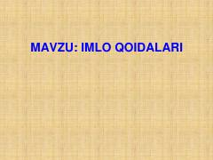

IQO'zbek tilining lotin yozuvidagi asosiy imlo qoidalari va ularning qo'llanilishi.
Ushbu qo'llanmada yangi lotin yozuviga asoslangan o'zbek imlo qoidalari, jumladan unli va undoshlar imlosi, asos va qo'shimchalar yozilishi hamda so'zlarni qo'shib, chiziqcha yoki ajratib yozish qoidalari tushuntirilgan. Kitob 1995-yilgi Vazirlar Mahkamasining qarori bilan tasdiqlangan me'yorlarga asoslanadi.